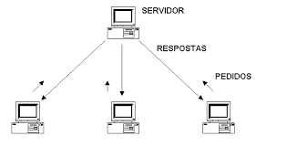

Gerenciar o tráfego de rede entre servidores
- O gerenciamento de tráfego de rede geralmente é realizado por roteadores e switches, não pelo DNS
Armazenar backups do servidor
- O DNS não é usado para armazenar backups de dados do servidor
Traduzir nomes de domínio em endereços IP
- O DNS que traduz os IPs para uma linguagem mais familiar ao usuário

Realizar análises de segurança de servidor em tempo real
- A análise de segurança em tempo real é geralmente realizada por ferramentas de segurança, não pelo DNS